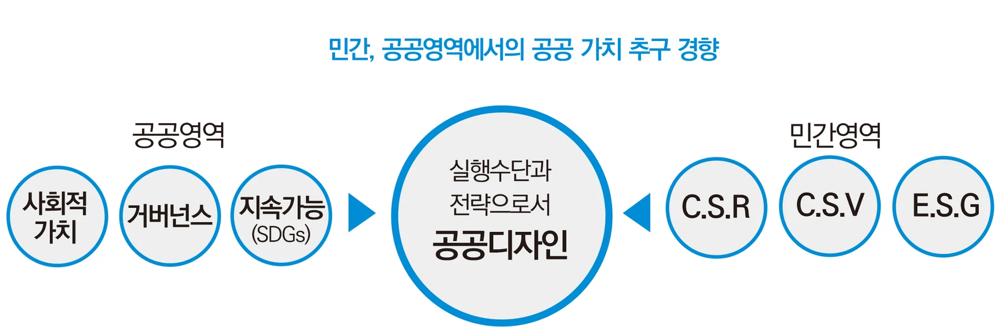
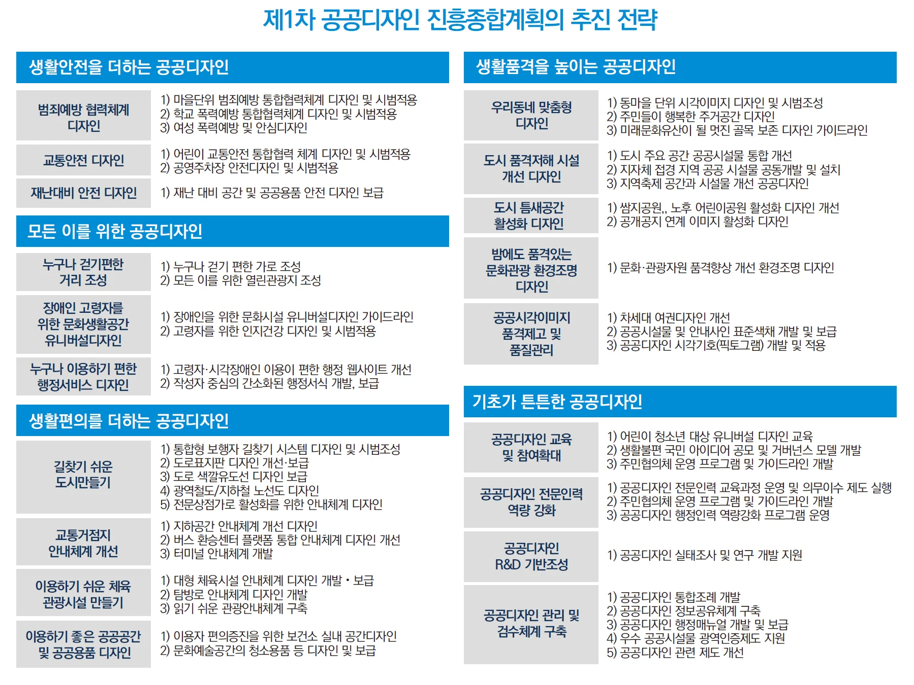
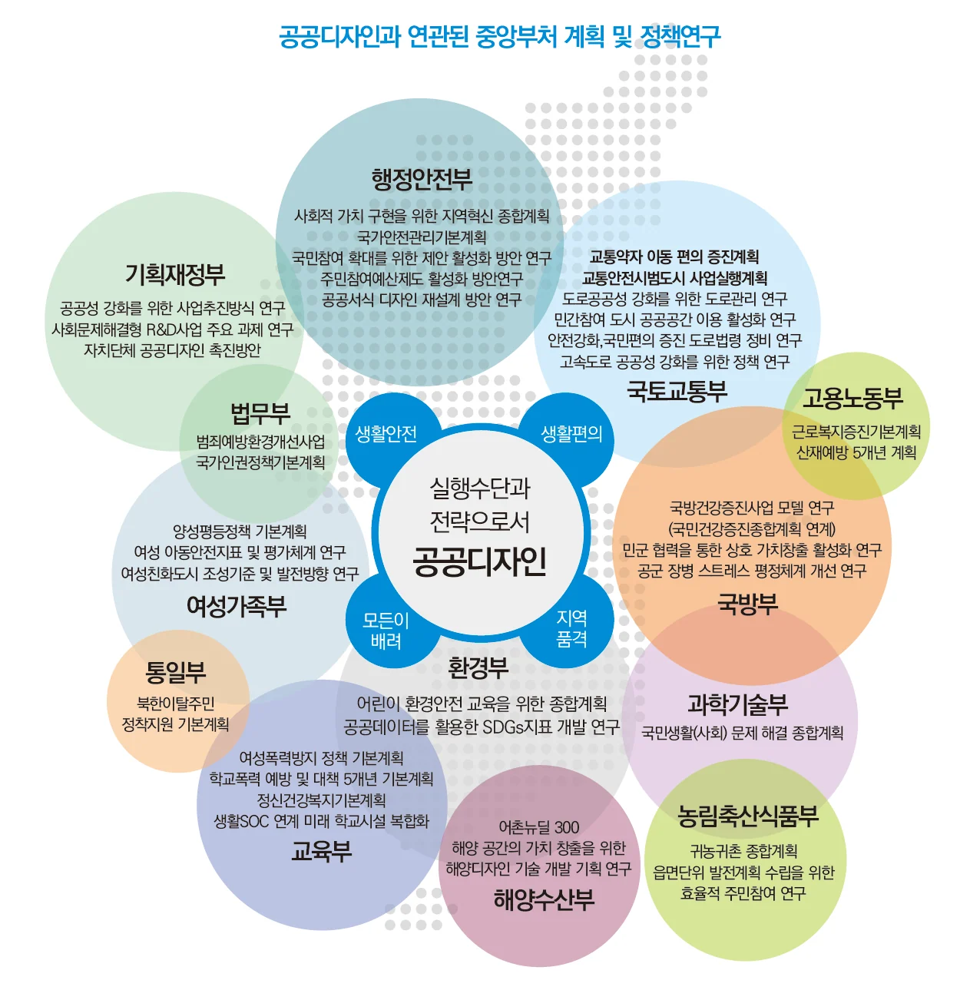
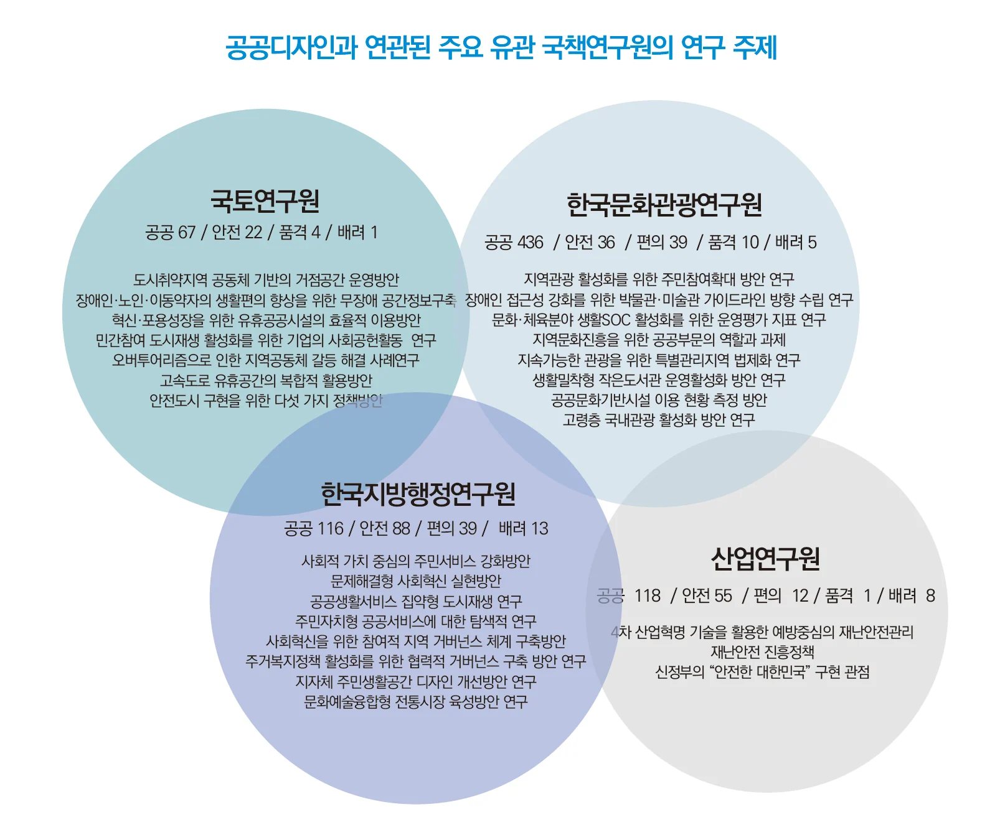
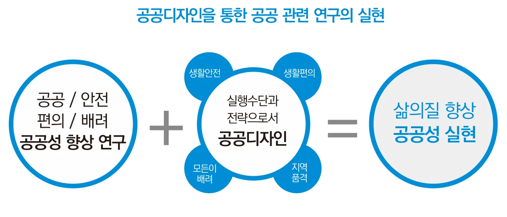
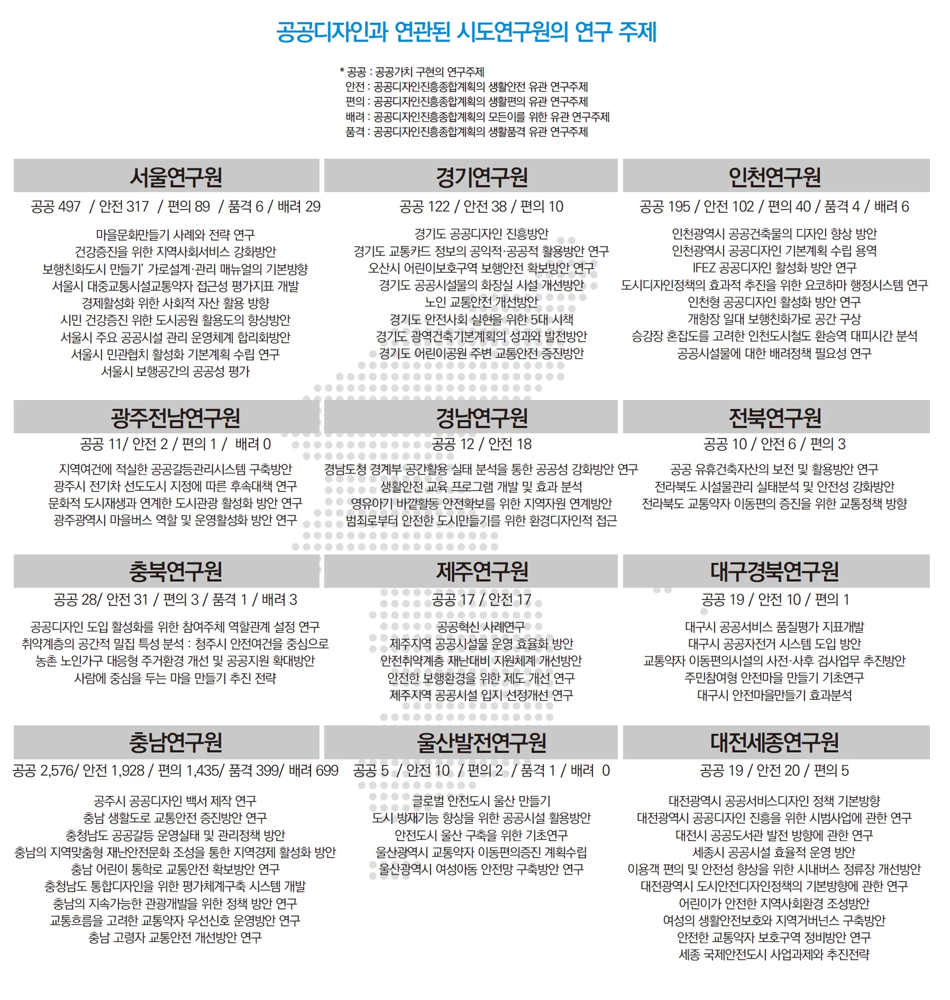

공공디자인 가치의 산실 — 공공디자인 연구 트렌드
[공공디자인 뉴스 특집 기사 3]
공공디자인 가치의 산실
“공공디자인 연구 트렌드 알아보기”
공공디자인의 진흥에 관한 법률 제19조 2항
“공공디자인 전담기관은 공공디자인의 진흥에 관한
정책 연구 및 연구지원 사업을 할 수 있다.”
각 분야에서 공공가치를 향상시키는 수단으로서 공공디자인의 의미
“....공공기관, 민간기관의 공공적 가치를 실현하는 사회적 트렌드에 발맞춰
공공디자인은 실행 전략으로서 발전해 나가야....”
2016년 공공디자인 진흥에 관한 법률(이하 공공디자인법)이 시행되기 이전의 공공디자인의 관심은 주로 환경적, 시설적, 경관적 요소에 있었다. 올림픽과 월드컵 등 국가의 대규모 행사를 치루면서 공공환경, 공공매체에 대한 개선의 필요성으로 인해 자동차 번호판, 여권, 간판 등의 디자인적 개선사업 등 공공재에 대한 기능적, 미적 개선이 진행되었다. 공공디자인법 이후 공공디자인은 공공가치를 실현하는 전략적인 방향으로 진화하게 되는데 이는 공공디자인 진흥종합계획에서 유형화되게 된다. 이에 따라 공공디자인은 안전, 편의, 배려 등과 같은 공공가치를 실현하기 위한 다양한 전략을 연구할 필요가 생겼으며 이는 공공디자인법에서는 전담기관을 통해 정책연구를 추진할 수 있도록 토대를 만들어 놓았다. 우리나라의 중앙부처들과 산하 연구기관들의 연구주제들을 살펴보면 공공디자인을 통해 실현할 수 있는 것들이 다수 있음을 알 수 있다. 공공디자인이 공공영역에서의 공공가치 실천 수단으로서의 역할을 수행할 수 있다. 본 특별기사에서는 우리나라 중앙부처와 연구소들의 정책연구들의 경향을 살펴보고 공공디자인과의 연관성에 대해 살펴보고자 한다.
민간과 공공의 새로운 화두 ‘공공가치’

21대 국회 ‘1호 법안’은 ‘공공기관의 사회적 가치 실현에 관한 기본법안’(이하 사회적가치법)이었다. 1호라는 상징성 때문에 세간의 관심을 받기도 했지만 이는 우리 사회가 발전하는 과정에서 자연스럽게 추구하고자 하는 지향점을 보여주고 있다. UN HABITAT도 지속가능발전목표(SDGs)를 통해 각 국가의 도시들이 도시디자인 의제를 설정하는데 미전을 제시하였듯이 우리도 가장 상위의 정책과 법률 등을 통해 공공영역에서 추구해야 할 가치들을 보여주고 있다.
민간 또한 다양한 변화를 보여주고 있는데 그 중 E.S.G관점의 기업 공공가치 향상에 대대한 관심은 공공디자인적 관점에서 관심을 가지고 보아야 할 부분이다. 쉽게 말해 기업이 투자를 받으려면 효율적으로 품질 좋고 예쁜 물건을 만들어내는 ‘생산적 가치’에 있던 기준이 환경(Environment), 사회(Society), 거버넌스(Governance)의 세 가지 관점에서 회사가 높은 평가를 받을 수 있는 ‘사회적 가치’로 옮겨간다는 것이다. 이제는 민간기업도 공공가치 실현을 위한 전략과 실행을 추구해야 한다.
이처럼 민간, 공공 양 영역에서 사회적 가치를 중요시 하는 시대적 변화를 겪고 있는데 ‘공공가치’를 실현해야 하는 그들에게 공공디자인은 어떤 방식, 전략으로 실행될 수 있을까?

중앙부처의 계획, 정책연구의 실현수단으로서 공공디자인의 가치
공공디자인 진흥종합계획의 5대 전략 19개 추진과제는 독자적으로 수행하기보다는 국가 공공기관의 정책, 제도, 사업 수행에 있어 협력 활용도 가능하다. 정부의 18개 중앙부처의 주요 계획과 정책연구과제들을 살펴보면 공공디자인의 주제와 부합하고 실행수단으로서 공공디자인과의 시너지 효과를 낼 수 있는 것들이 다수 존재한다.
행정안전부의 ‘사회적 가치 구현을 위한 지역혁신 종합계획’은 사회혁신을 시민참여를 통해 사회문제를 해결하여 사회적 가치를 창출하는 중요한 수단으로 정의내리고 공공디자인 진흥계획의 ‘기초가 튼튼한 공공디자인’의 전략과 부합하는 참여와 거버넌스의 방법론으로 공공의 문제를 해결하는 계획을 수립하고 있으며 ‘국가안전관리기본계획’은 생활안전 공공디자인을 통해 우리 실생활에 더욱 체감적으로 실현될 수 있다.
국토교통부의 계획과 정책연구들은 공공디자인과 밀접한 관계를 갖는데 특히 공공 보행로에서의 안전과 배려는 공공디자인의 핵심 전략이기도 한데 ‘교통약자 이동 편의 증진계획’,‘안전강화, 국민편의 증진 도로법령 정비 연구’등과는 상호 정합성과 계획의 실현성 강화 측면에서 협력을 해야 하는 부분이다. 그 외 교통안전시범도시 사업실행계획, 도로공공성 강화를 위한 도로관리 연구, 민간참여 도시 공공공간 이용 활성화 연구 등 공공성 강화와 거버넌스의 적용 측면은 공공디자인이 동반되어 수행될 때 큰 효과를 낼 것이다.
과학기술부의 국민생활(사회) 문제 해결 종합계획은 특히 눈여겨 볼 필요가 있는데 디자인이 국민 삶의 질 향상을 위한 공공가치 향상을 위한 수단으로 발전되어 가듯이 과학기술 또한 사회 문제를 해결하는 수단으로 발전되는 인본주의적 가치를 지향해 나가는 행보가 비슷하기 때문이다. ‘과학기술 기반 국민생활(사회) 문제 해결 종합계획’은 공공영역의 사회문제를 10대 분야 40개주요 문제로 유형화하여 정의내리고 ‘협력체계 구축’, ‘문제해결 플랫폼 구축’, ‘기술의 사회적 가치 강화’라는 3대 전략을 수립하고 10대 추진과제를 계획하였다. 특히 다부처의 협력 체계를 통한 사회문제의 해결을 중점적으로 강조하고 있는데 공공디자인 진흥계획과의 체계와도 유사하며 다부처 협력이라는 전략도 유사하다.

법무부의 법무 주요정책으로 범죄예방정책이 지정되어 있고 정책 서비스로 범죄예방환경개선사업이 진행 중에 있다. 이미 많은 공공영역에 CPTED(범죄예방환경디자인)사업을 진행하여 일반 국민들과 행정가들에게 잘 알려져 있으며 생활안전을 위한 공공디자인 전략 및 세부과제로 실행력을 강화할 수 있으며 법무부의 주요 계획인 국가인권정책기본계획의 제2부 6장 ‘모든 사람이 동등한 권리를 누리는 공정한 사회’에서는 편의증진 이행을 위한 기본전략과 ｢장애인의 권리에 관한 협약｣ 제2조 유니버설디자인 개념을 도입하여 특별한 변경 없이도 모든 사람이 사용할 수 있는 제품･환경 유니버설디자인 환경 확대 방안 강구하여 생활환경의 유니버설디자인화를 목적으로 하고 있다. 이는 공공디자인 전략의 모든 이를 위한 공공디자인중 장애인 고령자를 위한 문화공간의 유니버설디자인으로 실제적으로 실현 가능하다.
교육부의 경우 여성폭력방지 정책 기본계획과 학교폭력 예방 및 대책 5개년 기본계획을 수립하고 있는데 생활안전을 더하는 공공디자인의 세부과제인 ‘학교 폭력예방 통합협력체계 디자인’ 및 ‘여성 폭력예방 및 안심디자인’으로 실천이 가능하다. 또한 교육부의 생활SOC 연계 미래 학교시설 복합화 연구는 생활편의, 생활품격을 높이는 공공디자인의 세부 방안으로 효과를 높일 수 있다.
해양수산부의 어촌뉴딜 300 사업은 이미 공공디자인 사업과 밀접한 관계를 맺고 있으며 해양공간의 활용 가치를 향상시키고자 ‘해양 공간의 가치 창출을 위한 해양디자인 기술 개발 기획 연구’가 이미 이루어졌고 해양 공간의 가치를 향상시키기 위해 공공디자인 개념을 도입하는 연구를 진행하였다.
환경부의 연구 중 ‘어린이 환경안전 교육을 위한 종합계획’은 기초가 튼튼한 공공디자인전략중 공공디자인 교육 및 참여확대의 세부 과제를 통해 구현이 가능하다.
농림축산식품부 ‘귀농귀촌 종합계획’과 ‘읍면단위 발전계획 수립을 위한 효율적 주민참여 연구’등은 공공디자인이 공공디자인법 제10조를 통해 추구하고자 하는 ‘국민들의 의견을 적극적으로 수렴하며, 의사결정 과정에 국민들이 참여할 수 있는 다양한 방안을 마련’을 통해 농촌형 공공디자인 거버넌스를 계획, 운용할 수 있다.
그 외에도 국방부의 ‘민군 협력을 통한 상호 가치창출 활성화 연구’, 고용노동부의 ‘산재예방 5개년 계획’등도 안전공간등의 공공디자인 가이드라인등을 통해 실천력을 강화할 수 있으며 여성가족부의 ‘양성평등정책 기본계획’, ‘여성 아동안전지표 및 평가체계 연구’ 및 ‘여성친화도시 조성 기준 및 발전방향 연구’등은 모두 공공디자인에서 세부 전략으로 다루고자 하는 모든 이를 위한 공공디자인에 포함되어 있다.
“....국가의 중앙부처가 추구하는 공공영역의대상의 주요 연구과제들은 공공디자인의 지향가치와 공유되므로 공공디자인은 실행적 전략이자 수단으로서 발전해 나가야 한다....”
국책연구원 및 시도연구원 연구과제의 공공디자인화
국내 14개 시도연구원과 약 50여개의 국책연구원의 연구 과제를 살펴보면 공공디자인 진흥을 위한 주제인 ‘생활안전’, ‘생활편의’, ‘배려디자인’, ‘생활품격’ 등 공공영역의 공공가치를 위한 내용들을 살펴볼 수 있다.
(참고 : 각 연구주제들은 연구원 홈페이지와 국가균형발전위원회 NABIS에 공개된 자료를 참고로 하였음)

공공디자인과 유관된 연구주제들은 공공성과 공공가치 주제 중심의 연구가 가장 많았고 그 다음은 생활 속 안전에 대한 주제가 주를 이뤘다. 그 다음은 사용자의 편의에 대한 부분과 다양한 사용자의 배려에 대한 연구가 이뤄졌음을 알 수 있다. 공공디자인 진흥종합계획의 주제와 세부실행 방안의 구성이 유관 부처와의 협력형으로 구성되었다는 태생부터 공공디자인은 가치를 구현하기 위한 실행수단의 성격을 가지고 있다.


공공성의 가치를 구현하기 위한 다양한 공공기관의 노력은 끊임없이 연구되고 지속되고 있다. 이제는 디자인이라는 수단이 문제해결이라는 역할을 가지고 다양한 영역에서 이용되기 시작하고 있다. 우리에겐 공공디자인이라는 체계로 다가왔으며 폭넓게 연구되고 제시되고 있는 다양한 공공성 향상의 가치를 실천하는 동력으로 활용한다면 지역 공공디자인 진흥계획은 우리의 삶을 더욱 안전하고 편리하고 배려 받는 질적 향상을 이루게 할 것이다.
이 글의 판본과 수록 정보 ＋
집필 폴더의 자료; 실제 작성자·집필 기여 미확정
원고·초안의 표현을 보존해 수록한 온라인 편집본입니다.
- 수록 자료
- 공공디자인 뉴스 특집 기사 3 공공디자인 연구 트렌드.hwp
- 자료의 날짜 단서
- 기록 없음 · 실제 발표일과 다를 수 있습니다.
- 관련 파일
- 1개 / 서로 다른 본문 1종